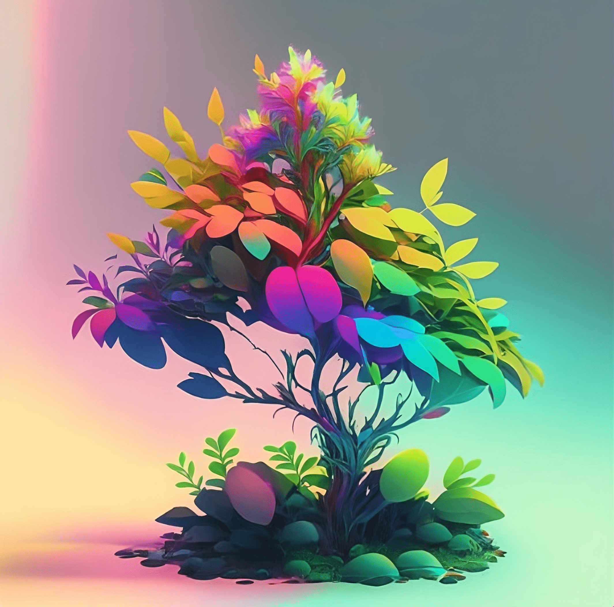

Самый красочный кустарник ТехноТерры. Он стал очень дорогим в последнее время, ведь из него получается отличный омолаживающий крем и чай. Люди, прибывающие на ТехноТерру, считают своим долгом его попробовать на себе, именно поэтому если не предпринять меры, Иван-Ган станет краснокнижным или вовсе вымрет.
